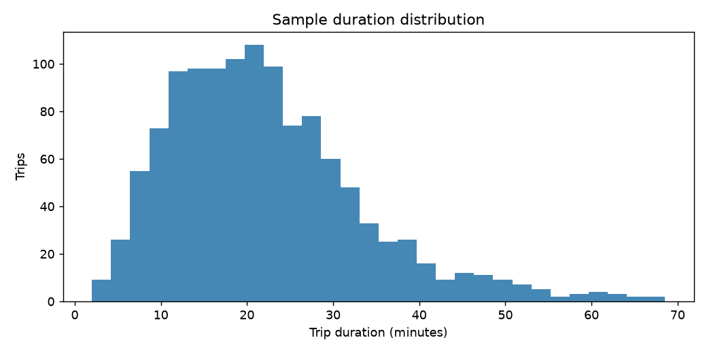
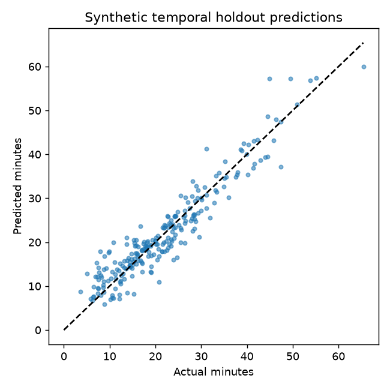

PROJECT 13 / MODEL AUDIT
Make the trip
legible.
A compact CRISP-DM command center for understanding, auditing, and stress-testing a synthetic NYC taxi duration model.
MODEL STATUSTrain-fit preprocessing80 / 20 chronological split · synthetic smoke test
01 / SCORECARD
A synthetic smoke-test scorecard.
Synthetic smoke-test metrics · artifacts/metrics.json
RUN IDENTITY
Know which evidence you are seeing.
Loading run manifest…
02 / EVIDENCE
See the data before trusting the score.
A
EDA / shapeTrip duration distribution

B
Temporal holdoutActual vs predicted

These are static snapshots generated by the same run as the JSON metrics. Use the error explorer below for row-level holdout evidence.
HOLDOUT EXPLORER
Find where the model misses.
Loading artifact-backed holdout errors…
03 / CRISP-DM LOOP
From question to monitoring plan.
A compact audit trail, not a production claim.
Business
understanding
Estimate duration for planning and audit demonstration.
Data
understanding
Profile schema, nulls, duplicates, invalid values, and outliers.
Data
preparation
Derive temporal features; fit imputation on train rows; exclude bad targets.
Modeling &
evaluation
Fit a CPU-safe gradient booster on a chronological holdout.
Deployment &
monitoring plan
Run locally; future work is drift, error-slice, and latency monitoring.
04 / DATA AUDIT
Small issues.
Visible early.
The platform audits the raw sample before training. Findings are intentionally surfaced instead of buried in a notebook.
Audit is loadingReading the saved report…
CheckObservedSignal
Missing distances—Loading
Non-positive durations—Loading
Duplicate trip IDs—Loading
IQR duration outliers—Loading
Complete audit categories—Loading
Show row-level findings
Loading findings…
05 / LOCAL INFERENCE LAB
What would this trip look like?
Play with the inputs and get a quick directional estimate in your browser. This is a separate toy calculator for exploration, not the evaluated saved model.
Toy browser calculator. The browser does not load model.joblib or use zone inputs. For the evaluated Python model, use the CLI command in the run guide below. Never use this demo for dispatch, pricing, or safety decisions.
06 / REPORT NOTES
The narrative behind the numbers.
Loading crispdm_report.md…
07 / RUN GUIDE
Keep the evidence reproducible.
Regenerate the artifacts, run the exact saved-model inference, and execute the tests from the project root.
01
python run_platform.py --output artifacts02
python run_platform.py --infer --pickup-hour 17 --weekday 4 --distance-miles 3.2 --passengers 2 --pickup-zone 1 --dropoff-zone 203
pytest -q04
python -m http.server 8000